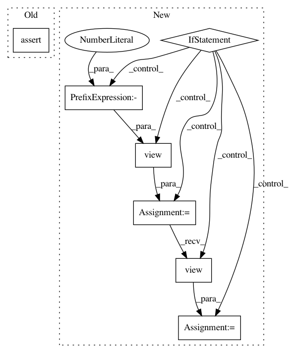

9766d2c13ddca10d5e45280450ee9cab649afb18,pytorch/cls_metrics.py,TopKAccuracy,update,#TopKAccuracy#Any#Any#,105
Before Change
pred_label = preds.cpu().numpy().astype(np.int32)
pred_label = np.argpartition(pred_label, -self.top_k)
label = labels.cpu().numpy().astype(np.int32)
assert (label.shape == pred_label.shape)
num_samples = pred_label.shape[0]
num_dims = len(pred_label.shape)
if num_dims == 1:
self.sum_metric += (pred_label.flat == label.flat).sum()
After Change
assert (len(labels) == len(preds))
with torch.no_grad():
if self.torch_like:
_, pred = preds.topk(k=self.top_k, dim=1, largest=True, sorted=True)
pred = pred.t()
correct = pred.eq(labels.view(1, -1).expand_as(pred))
num_correct = correct.view(-1).float().sum(dim=0, keepdim=True).item()
num_samples = labels.size(0)
assert (num_correct <= num_samples)
self.sum_metric += num_correct
self.global_sum_metric += num_correct
self.num_inst += num_samples
self.global_num_inst += num_samples
else:
assert(len(preds.shape) <= 2), "Predictions should be no more than 2 dims"
pred_label = preds.cpu().numpy().astype(np.int32)
pred_label = np.argpartition(pred_label, -self.top_k)
label = labels.cpu().numpy().astype(np.int32)
assert (len(label) == len(pred_label))
num_samples = pred_label.shape[0]
num_dims = len(pred_label.shape)
if num_dims == 1:
num_correct = (pred_label.flat == label.flat).sum()
self.sum_metric += num_correct
self.global_sum_metric += num_correct
elif num_dims == 2:
num_classes = pred_label.shape[1]
top_k = min(num_classes, self.top_k)
for j in range(top_k):
num_correct = (pred_label[:, num_classes - 1 - j].flat == label.flat).sum()
self.sum_metric += num_correct
self.global_sum_metric += num_correct
self.num_inst += num_samples
self.global_num_inst += num_samples
class Top1Error(Accuracy):
Computes top-1 error (inverted accuracy classification score).
In pattern: SUPERPATTERN
Frequency: 3
Non-data size: 7
Instances
Project Name: osmr/imgclsmob
Commit Name: 9766d2c13ddca10d5e45280450ee9cab649afb18
Time: 2019-05-10
Author: osemery@gmail.com
File Name: pytorch/cls_metrics.py
Class Name: TopKAccuracy
Method Name: update
Project Name: OpenNMT/OpenNMT-py
Commit Name: b5486aaea994960688152e91fbab7699dc04e8c1
Time: 2017-08-14
Author: taolei@csail.mit.edu
File Name: onmt/Models.py
Class Name: Decoder
Method Name: forward
Project Name: OpenNMT/OpenNMT-py
Commit Name: a3eaeb686bb7ed8b1521243111dc2eb771889b2b
Time: 2019-02-11
Author: dylan.flaute@gmail.com
File Name: onmt/translate/random_sampling.py
Class Name: RandomSampling
Method Name: update_finished